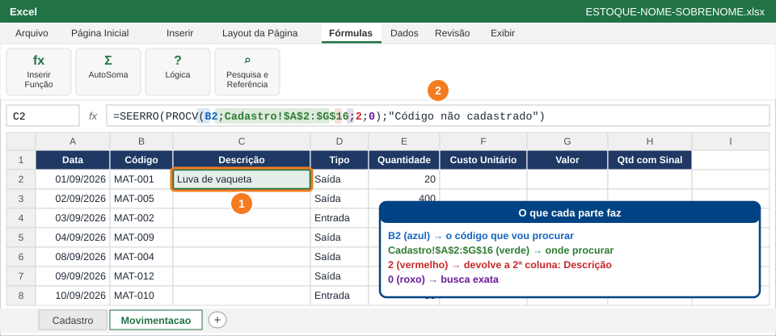
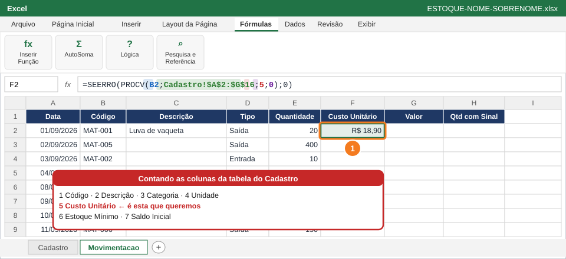
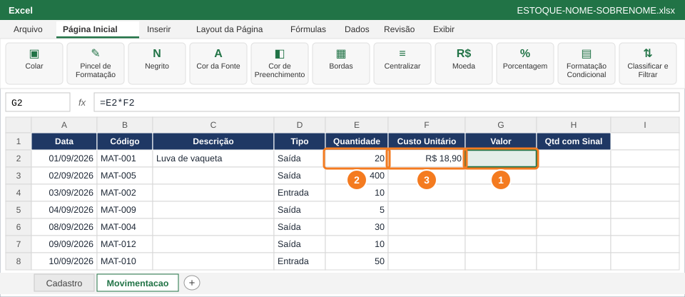
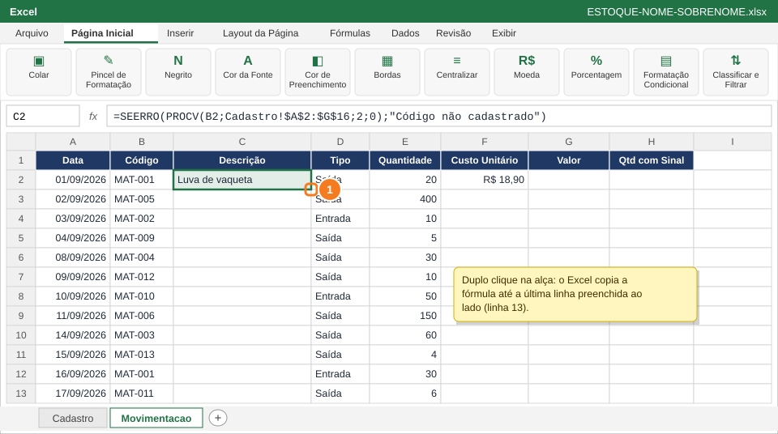
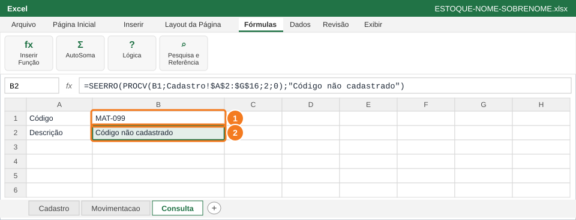
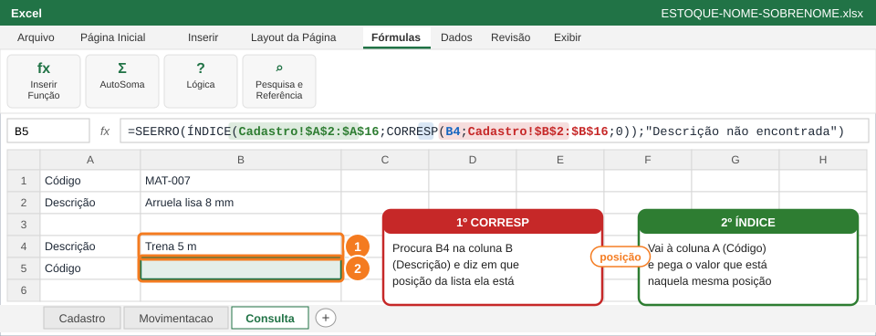
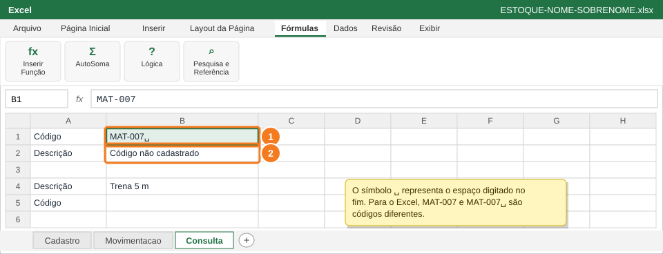

Fazer o Excel buscar sozinho a descrição e o custo de cada material pelo código, tratar códigos que não existem e fazer uma busca "para a esquerda", do nome até o código.
Você vai usar
PROCV
SEERRO
Referência absoluta ($)
Alça de preenchimento
ÍNDICE e CORRESP
Aba de trabalho:Movimentacao e Consulta (nova) · Slides de apoio: Arquivo 5 — slides 9–11.1, 16–20 e 22–23.1
1
Busque a descrição com PROCV

Clique em C2 (1) e digite a fórmula na barra (2). Cada cor é um argumento.
Copia só os dados da tabela (sem fórmulas nem formatação).
Na aba Movimentacao, clique em C2 (1).
Digite a fórmula abaixo exatamente como está e tecle Enter (2).
Leia a fórmula por partes: B2 é o código procurado; Cadastro!$A$2:$G$16 é a tabela onde procurar; 2 é a coluna que volta (Descrição); 0 pede busca exata.
=SEERRO(PROCV(B2;Cadastro!$A$2:$G$16;2;0);"Código não cadastrado")
⚠️ AtençãoSepare os argumentos com ponto e vírgula (;). O texto da mensagem precisa ficar entre aspas duplas.
✅ VerifiqueC2 mostra o nome de um material, e não #N/D nem a mensagem de código não cadastrado.
2
Busque o custo com PROCV

Em F2 (1), a mesma busca, agora devolvendo a 5ª coluna do Cadastro.
Copia só os dados da tabela (sem fórmulas nem formatação).
Clique em F2 (1) e digite a fórmula abaixo.
O 5 traz a 5ª coluna do Cadastro: Custo Unitário. Se o código não existir, o SEERRO devolve 0, para não quebrar as contas.
Formate F2 como Moeda (Ctrl+1).
=SEERRO(PROCV(B2;Cadastro!$A$2:$G$16;5;0);0)
💡 DicaConte as colunas a partir da primeira coluna da tabela (Código = 1). Errar essa contagem é o erro mais comum do PROCV.
3
Calcule o Valor da movimentação

Em G2 (1): Quantidade (2) × Custo Unitário (3).
Copia só os dados da tabela (sem fórmulas nem formatação).
Clique em G2 (1), digite =E2*F2 e tecle Enter: multiplica a Quantidade (2) pelo Custo Unitário (3).
Formate G2 como Moeda.
✅ VerifiqueG2 mostra um valor em reais, maior que zero.
4
Copie as fórmulas até a linha 13

Duplo clique no quadradinho verde do canto da célula (1).
Copia só os dados da tabela (sem fórmulas nem formatação).
Clique em C2.
Aponte para o quadradinho verde no canto inferior direito da célula (1): o cursor vira uma cruz preta +.
⚠️ AtençãoGraças aos $, a tabela do Cadastro não anda quando a fórmula é copiada. Sem eles, as últimas linhas dariam #N/D.
5
Crie a aba Consulta e teste um código inexistente

Digite o código em B1 (1). Em B2 (2), o PROCV com SEERRO mostra a descrição ou a mensagem.
Crie a aba Consulta (botão +).
Digite Código em A1 e Descrição em A2.
Em B1, digite MAT-007 (1).
Em B2 (2), digite a fórmula abaixo.
Troque B1 para MAT-099: a mensagem Código não cadastrado deve aparecer. Depois volte B1 para MAT-007.
=SEERRO(PROCV(B1;Cadastro!$A$2:$G$16;2;0);"Código não cadastrado")
✅ VerifiqueCom MAT-007, B2 mostra o nome do material. Com MAT-099, mostra a mensagem, sem #N/D.
6
Busque o código pela descrição com ÍNDICE + CORRESP

Digite a descrição em B4 (1). Em B5 (2), CORRESP acha a posição e ÍNDICE pega o código.
Em A4 digite Descrição e em A5 digite Código.
Em B4, digite Trena 5 m (1), igual ao Cadastro.
Em B5 (2), digite a fórmula abaixo.
Por que não PROCV? O PROCV só procura na primeira coluna da tabela e devolve colunas à direita. Aqui procuramos pela Descrição (coluna B) e queremos o Código (coluna A), que está à esquerda.
=SEERRO(ÍNDICE(Cadastro!$A$2:$A$16;CORRESP(B4;Cadastro!$B$2:$B$16;0));"Descrição não encontrada")
💡 DicaCORRESP acha a posição; ÍNDICE pega o valor naquela posição. Juntas, elas buscam em qualquer direção.
🐧 No LibreOffice CalcNo LibreOffice Calc as funções também se chamam ÍNDICE e CORRESP.
7
Descubra por que uma busca falha

Um espaço no fim do código em B1 (1) já faz a busca em B2 (2) falhar.
Em B1 da Consulta, digite MAT-007 com um espaço no final e tecle Enter (1).
Observe B2 (2): a busca falha, porque o código com espaço é diferente do código do Cadastro.
Apague o espaço e veja a descrição voltar.
Salve: Ctrl+B.
💡 DicaEm planilhas vindas de outros sistemas, use =ARRUMAR(A2) para tirar espaços extras antes de buscar. Número guardado como texto também faz o PROCV falhar.
✅ VerifiqueAs colunas C, F e G da Movimentacao estão preenchidas até a linha 13, sem #N/D.
📋 Como esta questão será avaliada
Critério
Pontos
PROCV com busca exata (0) e tabela travada com $ nas colunas C e F
0,6
SEERRO tratando código inexistente
0,4
Valor (=E2*F2) e fórmulas copiadas até a linha 13
0,4
ÍNDICE + CORRESP devolvendo o código a partir da descrição